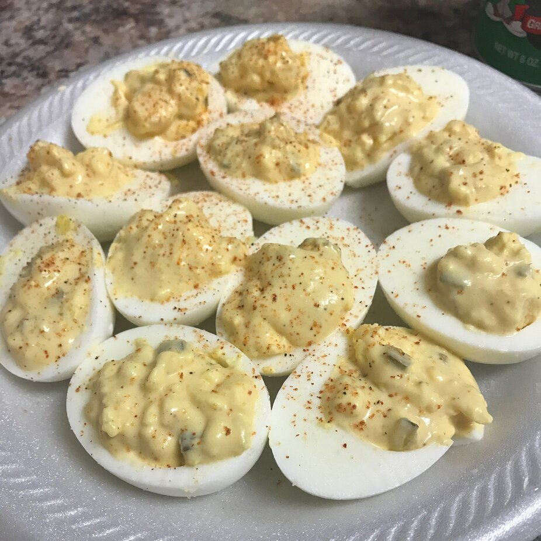

Deviled Eggs
These deviled eggs are made with Miracle Whip® instead of mayo.
Ingredients
- 8 eggs
- ½ teaspoon prepared mustard
- 1 tablespoon creamy salad dressing (such as Miracle Whip®), or as needed
- salt and pepper to taste
- 1 pinch paprika
Steps
- Step 1:
Place eggs in saucepan and cover with water. Bring to boil. Cover, remove from heat, and let eggs sit in hot water for 10 to 12 minutes. Remove from hot water and cool in ice water.
- Step 2:
Peel and cut in half lengthwise. Remove yolks and combine with mustard, salad dressing and salt and pepper. Mix together until smooth.
- Step 3
Refill each egg half with the yolk mixture and sprinkle with paprika.
Return to top
Return to main page